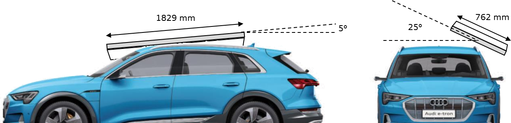

[redacted-co]
[redacted-co]
D[redacted]
D[redacted]
[redacted-person]
[redacted-person]
LAH.DUM.857.DH
Version 20221129
Abstimmung
Inhaltsverzeichnis
[redacted-person] der Fahrzeugsicherheit 5
Dacheindrückung an geschlossenen Fahrzeugen 7
Steifigkeits-Gewichts-Verhältnis (SWR) in der Dacheindrückung 14
[redacted-person] und Testrandbedingungen in der Dacheindrückung 16
Änderungsdokumentation
| Stand | Beschreibung der Änderung | Ersteller |
|---|---|---|
| [redacted-person] | Überarbeitung auf Basis LAH [redacted-phone]C Neue LAH Nummer textlich & inhaltlich komplett überarbeitet Bezugsmasse auf mleer angepasst; [redacted-person] eingefügt |
[redacted-person] |
| [redacted-person] | [redacted-person] Neue FMVSS 216a eingearbeitet FMVSS208 Rollover für RdW entfallen Spezifikation dynamische Versuche überarbeitet |
[redacted-person] |
| [redacted-person] | Aktualisierung | [redacted-person] |
| [redacted-person] | Aktualisierung / Entfall ANCAP / [redacted-person] im Dachfalltest | [redacted-person] |
| [redacted-person] | Anpassungen zum FMVSS208 Rollover / Hinweise zur Dokumentation / [redacted-person] hinzu | [redacted-person] |
| [redacted-person] | [redacted-person] Dachreling in der statischen Dacheindrückung | [redacted-person] |
| [redacted-person] | Anpassung für China-Projekte | [redacted-person] |
| [redacted-person] | Aktualisierung für C-SUV C-IASI ohne Dachreling Eindrückung nur bis 127mm Durchführung ohne Kopfhalter |
[redacted-person] |
| [redacted-person] | [redacted-person] GB [redacted-phone]: Auslegungsfaktor von 2,5 auf 3,0 (AKS Entscheidung) Ergänzung GB [redacted-phone]„[redacted-person]“ in Anlehnung an FMVSS 216a [redacted-person] mit [redacted-person] |
[redacted-person] |
| V20221129 [redacted-phone]) | Update neuer Entwurf GB [redacted-phone]x mit einseitiger Dacheindrückung und Zielwerten 54 kN und SWR 3,0; [redacted-person] „in production“ ab Juli 2027 Update neuer Entwurf V.16 (V.17) von C-IASI V3.0 Dacheindrückung mit Abbruchkriterium der Zielkrafterreichung auf 1. Druckseite [redacted-person] Consumer C-IASI V2.0 und V3.0 mit Sicherheitsfaktor von 1,05 bzw. +5% [redacted-person] SWR-Faktor und Fahrzeuggewicht |
[redacted-person] |
Vorwort
[redacted-person] gilt für neue Projekte. [redacted-person] der geänderten Anforderungen in bestehende Projekte (nach Meilenstein KF) kann durch eine individuelle Projektentscheidung erfolgen.
[redacted-person] dient zur Ergänzung des Bauteillastenheftes der Konstruktion und legt die Anforderungen der Fahrzeugsicherheit (Crashverhalten) an die Funktionen, Leistungen, Mindestanforderungen, Prüf- und Erprobungsbedingungen für die Dachsteifigkeit fest.
[redacted-person] der Entwicklung ist der Schutz der Insassen im Falle eines Fahrzeugüberschlages. [redacted-person] muss sämtliche gesetzliche Vorschriften und interne Anforderun- gen erfüllen. [redacted-person] ist das Bestehen von Verbrauchertests sowie [redacted-person]- gleiche während des gesamten Herstellzeitraumes des Fahrzeuges mit dem Ergebnis „in best class“ (bzw. „among leaders“).
[redacted]
GB [redacted-phone]/ GB [redacted-phone]x
C-IASI [redacted-person] (Consumer)
Werkstoffanforderungen, Lebensdaueranforderungen und Lagerfähigkeit sind dem ent- sprechenden Bauteillastenheft zu entnehmen.
[redacted-person] in diesem Lastenheft sind Grundlage der TE Freigabe.
Die gesamten Erprobungsumfänge sind in entsprechend ausgestatteten Karossen bzw. Fahrzeugen durchzuführen. Alle verwendeten Bauteile sind nach PDM-Vorgaben zu montie- ren.
Im Rahmen der Entwicklung sind geeignete Ersatzprüfungen zu erarbeiten und im Vorfeld mit der Fahrzeugsicherheit abzustimmen.
Modifikationen der nachfolgend beschriebenen Testkonfigurationen können durch die im Ver- lauf der Entwicklung gewonnenen Erfahrungen in Abstimmung mit der Fahrzeugsicherheit notwendig werden.
Generell gelten alle hier aufgeführten Richtlinien, Verfahrensanweisungen und Gesetzes- texte. Darüber hinaus gehende Vorgaben und Parameter zur Versuchsdurchführung, die in diesem LAH nicht spezifiziert sind, sind vor Versuch mit der [redacted-co] Fahrzeugsicherheit abzu- stimmen.
Die zu berücksichtigenden Versuche ergeben sich durch das Fahrzeugkonzept. Im Ent- wicklungsablauf kann sich zeigen, dass Versuchskonfigurationen durch andere abgedeckt werden. In Rücksprache mit der Fahrzeugsicherheit kann der Nachweis mit den „worst-case“- Varianten erfolgen. Nachfolgend sind die unterschiedlichen Varianten aufgeführt:
[redacted-person]: mit Dachfenster (z.[redacted-person]/Ausstell-/Panoramadach)
ohne Dachfenster
Derivate: z.[redacted-person], Großdach
[redacted-person] der statischen Lastfälle und des Dachfalltests dienen der zielgerichteten Auslegung einer sicheren Erfüllung der Dacheindrückung und der Gewährleistung eines guten Insassenschutzes.
Es ist anzustreben, zusätzlich zum jeweiligen Gesetz bzw. zur jeweiligen Test-Prozedur, bei allen Versuchen folgende Ziele zu erreichen:
homogenes Deformationsverhalten der Dachstruktur.
keine scharfkantigen Anstoßkonturen, insbesondere bei Bau-/Gestängeteilen im Kopfauf- schlagsbereich.
kein Einknicken in den Fahrgastraum.
kein Versagen von Insassenschutz relevanten Bauteilverbindungen. Design-Empfehlung: keine Stumpfstöße zwischen den Bauteilen/Spriegeln.
kein Bruch von tragenden Bauteilen.
kein Öffnen der Türen.
keine sich ablösenden Bauteile.
keine Verdecköffnung, bzw. Ablösen des Hardtops bei Dacheindrückung.
Alle im Lastenheft genannten Richtwerte (max. Kräfte, Intrusionen, etc.) gelten als Orientie- rungshilfe zum Erreichen der zuvor genannten Ziele in der Entwicklung.
Bei den einzusetzenden Dummys wird nach der Versuchsart unterschieden.
Dacheindrückung GB [redacted-phone]x Kopfhalter auf der [redacted-person] C-IASI Kopfhalter auf der Druckseite (Monitoring)
[redacted-person] muss der jeweils aktuell gültigen Testprozedur der entsprechen.
[redacted-person] dient zur Überprüfung der Widerstandsfähigkeit des Daches gegen Eindrü- ckung.
[redacted-person] muss folgende Mindestausstattung aufweisen:
Frontscheibe.
Heckscheibe, bei Avant und offenen Fahrzeugen nur Heckklappe.
Seitenscheiben.
Gurthöhenversteller an der Belastungsseite.
Türen auf Belastungsseite komplett mit Schließsystemen; ggf. ohne Innenverkleidung.
Modulquerträger.
Ggf. ÜRSS.
Himmel, Dachhaltegriffe, Pfosten A & B Verkleidung (in der Entwicklung kann ggf. auch ohne Verkleidungen getestet werden).
[redacted-person].
Vorder- und Hinterachse (Empfehlung für den C-IASI Freigabeversuch).
Dachreling
[redacted-person] ist ohne Dachreling durchzuführen.
[redacted-person] ist bis zu einem Stempelweg von 127 mm durchzuführen.
[redacted-person] erfolgt nach dem aktuellen IIHS [redacted-person]. Ausnahmen sind mit der [redacted-co] Fahrzeugsicherheit abzustimmen.
[redacted-person] ist einseitig durchzuführen.
[redacted-person] beträgt – soweit nichts anderes vereinbart wurde – 5 mm/s.
Zusätzlich zur sicheren Gesetzeserfüllung müssen die nachfolgenden [redacted-co]-Anforderungen erreicht werden. Grundsätzlich sind als Entwicklungsziel alle gesetzlichen Grenzwerte sowie alle Anforderungen bzgl. Selbstverpflichtung mit einer Sicherheit zu erfüllen.
Dies dient der Absicherung von Produktionsschwankungen (bzgl. Verbindungstechnik, Materialgüte, Materialstärke und Versuchsstreuungen) und gewährleistet eine sichere Erfüllung aller Anforderungen (Gesetz, Selbstverpflichtung) in der Serienfertigung über die gesamte Laufzeit.
Abweichungen vom Entwicklungsziel sind im Einzelfall bei Nachweis einer entsprechend notwendigen Prozessgüte und serienbegleitender Qualitätsprüfungen im Herstellungsprozess möglich, erfordern jedoch zwingend die Genehmigung durch die Fahrzeugsicherheit unter Einbeziehung der zuständigen Qualitätssicherungsabteilungen.
mLG,China = maximales [redacted-person].
| a) |
|
|---|---|
| b) |
|
Die GB [redacted-phone]soll durch die Revision GB [redacted-phone]x aktualisiert werden. Diese ist gültig für neue Typgenehmigungen („for new type“) ab [redacted-phone]und für neue Zulassungen („for in-production“) ab [redacted-phone]
[redacted-person] ist ohne Dachreling durchzuführen.
[redacted-person] erfolgt nach der aktuellen Testprozedur der GB [redacted-phone]x und ist bis zu einem Stempelweg von 127 mm durchzuführen.
[redacted-person] erfolgt dabei abweichend nach dem aktuellen IIHS Testprotokoll. Ausnahmen sind mit der [redacted-co]-Fachabteilung abzustimmen.
[redacted-person] ist einseitig durchzuführen. [redacted-person] ist mit Kopfhalter durchzuführen.
[redacted-person] beträgt – soweit nichts anderes vereinbart wurde – 5 mm/s.
Zusätzlich zur sicheren Gesetzeserfüllung müssen die nachfolgenden [redacted-co]-Anforderungen erreicht werden. Grundsätzlich sind als Entwicklungsziel alle gesetzlichen Grenzwerte sowie alle Anforderungen bzgl. Selbstverpflichtung mit einer Sicherheit zu erfüllen.
Dies dient der Absicherung von Produktionsschwankungen (bzgl. Verbindungstechnik, Materialgüte, Materialstärke und Versuchsstreuungen), und gewährleistet eine sichere Erfüllung aller Anforderungen (Gesetz, Selbstverpflichtung) in der Serienfertigung über die gesamte Laufzeit.
Abweichungen vom Entwicklungsziel sind im Einzelfall bei Nachweis einer entsprechend notwendigen Prozessgüte und serienbegleitender Qualitätsprüfungen im Herstellungsprozess möglich, erfordern jedoch zwingend die Genehmigung durch die Fahrzeugsicherheit unter Einbeziehung der zuständigen Qualitätssicherungsabteilungen.
mLG,China = maximales [redacted-person].
| a) |
|
|---|---|
| b) |
|
Dachreling
[redacted-person] wird ohne Dachreling durchgeführt, das Verhalten mit Dachreling ist zusätzlich zu ermitteln (Versuch und / oder Simulation).
[redacted-person] erfolgt nach dem aktuellen C-IASI V2.0 [redacted]erfolgt dabei abweichend nach dem aktuellen IIHS Testprotokoll. Ausnahmen sind mit der [redacted-co]-Fachabteilung abzustimmen.
[redacted-person] ist bis 127 mm Stempelweg zu fahren. [redacted-person] ist einseitig durchzuführen.
[redacted-person] beträgt – soweit nichts anderes vereinbart wurde – 5 mm/s.
Der C-IASI Freigabeversuch ist möglichst mit Achsen und komplettem Greenhouse (oberhalb B-Säule) zu fahren.
[redacted-person] hinsichtlich des Gesamtratings werden projektspezifisch definiert und sind im Projektlastenheft festgehalten.
[redacted-person] und Antriebsart ergeben sich aus dem [redacted-person]. Es ist das maximale Leergewicht dieser Variante für den Test anzusetzen. Hintergrund ist die nicht Steuerbarkeit des Testfahrzeugkaufs durch das Prüfinstitut und die in der Regel hohe Ausstattungsrate der Markteinführungsfahrzeuge.
Für das Rating wird das C-IASI V2.0 [redacted-person] herangezogen. mLG,C-IASI = maximales Leergewicht C-IASI-Testfahrzeug.
FC-IASI ≥ 4,0 x mLG,C-IASI x 1,05.
[redacted-person] wird bis 127 mm Gesamt-Eindrückweg durchgeführt.
Dachreling
[redacted-person] wird ohne Dachreling durchgeführt, das Verhalten mit Dachreling ist zusätzlich zu ermitteln (Versuch und / oder Simulation).
[redacted-person] erfolgt nach dem aktuellen C-IASI V3.0 [redacted]erfolgt dabei abweichend nach dem aktuellen IIHS Testprotokoll. Ausnahmen sind mit der [redacted-co]-Fachabteilung abzustimmen.
[redacted-person] ist mit Kopfhalter durchzuführen (Monitoring). [redacted-person] ist beidseitig durchzuführen.
[redacted-person] beträgt – soweit nichts anderes vereinbart wurde – 5 mm/s.
Druckseite:
[redacted-person] ist auf der ersten Seite bei Krafterreichung (SWR 4,2) abzubrechen. [redacted-person] ist hierbei bis zu einem Stempelweg von maximal 127 mm durchzuführen.
[redacted-person] ist während des Versuchs zu dokumentieren.
Druckseite:
[redacted-person] ist auf der zweiten Seite bis zu einem Stempelweg von 127 mm durchzuführen.
[redacted-person] ist während des Versuchs zu dokumentieren. Ein mögliches offizielles Kopfkriterium befindet sich aktuell noch in Diskussion.
[redacted-person] hinsichtlich des Gesamtratings werden projektspezifisch definiert und sind im Projektlastenheft festgehalten.
[redacted-person] und Antriebsart ergeben sich aus dem [redacted-person]. Es ist das maximale Leergewicht dieser Variante für den Test anzusetzen. Hintergrund ist die nicht Steuerbarkeit des Testfahrzeugkaufs durch das Prüfinstitut und die in der Regel hohe Ausstattungsrate der Markteinführungsfahrzeuge.
Für das Rating wird das C-IASI V3.0 [redacted-person] herangezogen.
mLG,C-IASI = maximales Leergewicht C-IASI-Testfahrzeug.
| a) |
|
|---|---|
| b) |
|
| c) |
|
| d) |
|

[redacted-person] der Randbedingungen für eine (einseitige) Dacheindrückung:
|
|
|---|---|
|
|
|
|
|
|
|
|
Beispiel für [redacted-person] anhand der FMVSS 216a.
|
|
|---|---|
|
[redacted-person]-Gewichts-Verhältnis (engl. strength-to-weight-ratio, SWR) ist ein fahrzeugspezifischer Wert, und gibt das Verhältnis zwischen maximaler [redacted-person] der Fahrzeugstruktur und der Gewichtskraft des Fahrzeugs an:
𝐹max
SWR =
(⏟𝑚F_a_hr_zeug_∙_𝑔¸)
[redacted-person]
Ein hoher SWR-Faktor beschreibt eine hohe Widerstandkraft der Fahrzeugstruktur gegen ein Eindrücken des Daches.
Beispiel der Bewertungstabelle für das IIHS- Rating im [redacted-person] (engl. roof crush):
mit: 𝑔 = 9,81 m⁄s2
|
|
|---|---|
|
|
|
|
|
|
|
|
𝐹max = SWR ∙ (𝑚Fahrzeug ∙ 𝑔)
Berechnung der Zielkraft lt. Protokoll FMVSS 216a:
𝐹max1./2.Druckseite = 3,0 ∙ (2.278 kg ∙ 9,81 m⁄s2) = 67,0 kN
Berechnung der Zielkraft nach Lastenheft (LAH) für die erste und zweite Druckseite:
𝐹max,1.Druckseite = 3⏟,0
Faktor aus FMVSS 216a
( 2⏟._278 k¸g
Fzg.Gewicht
9,81 m⁄s2) ∙ 1⏟,1
Sicherheitsfaktor LAH
= 73,7 kN
𝐹max,2.Druckseite = 3,0 ∙ (2.278 kg ∙ 9,81 m⁄s2) ∙ 1,2 = 80,4 kN
Beispiel der Berechnungsbasis ist ein Fahrzeug mit maximalem Leergewicht (mit 100% Mehrausstattung):
|
|
|---|---|
|
|
|
|
[redacted-person] bildet als Eingangsgröße – z.[redacted-person] die Bestimmung des SWR-Faktors in der Dacheindrückung – einen wichtigen Parameter.
[redacted-person] werden i.d.[redacted-person] dem Gewicht des schwersten Fahrzeugs (schwerstes Modell bzw. schwerstes Aggregat) abgebildet. Hierzu wird das maximale Leergewicht bzw. Leergewicht mit Überlast aus maximaler Mehrausstattung (100% MA) gebildet.
[redacted-person] in den Consumer-Lastfällen ist nicht zwingend das leichteste oder schwerste Aggregat, sondern das mit der höchsten Testwahrscheinlichkeit im jeweiligen Testinstitut (vgl. C-IASI). Dieses gilt es anhand von Volumenausplanungen und Fahrzeuganläufen, sowie in enger Abstimmung mit den Fachexperten der jeweiligen Märkte, im Projekt zu definieren.
Für die Ermittlung der Fahrzeugtestgewichte bilden jeweils die marktspezifischen Gewichtstabellen (China) die Eingangsgrößen.
Beispiel einer Gewichtszusammensetzung und -verteilung eines Fahrzeugs:
|
|||
|---|---|---|---|
|
|
|
|
|
|
|
|
|
|
|
|
|
|
|
|
|
|
|
|
|
Typ | Test |
|
|
|
|
|---|---|---|---|---|---|---|
GB [redacted-phone] (China) |
gesetzlich | einseitig |
|
|
3,0 |
|
GB [redacted-phone]x (China) |
gesetzlich | einseitig |
|
|
54 kN und 3,0 |
|
C-IASI V2.0 (China) |
Consumer | einseitig |
|
|
4,2 |
|
C-IASI V3.0 (China) |
Consumer | beidseitig |
|
|
4,2 / 3,15 |
|